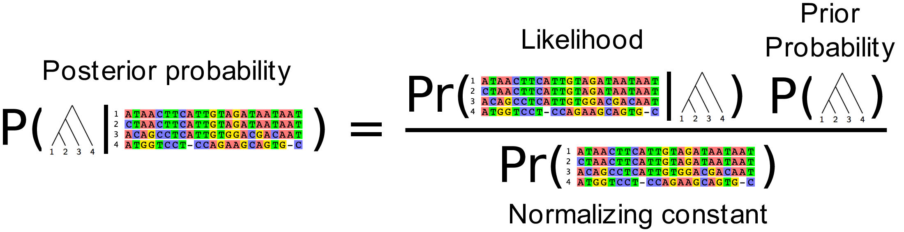
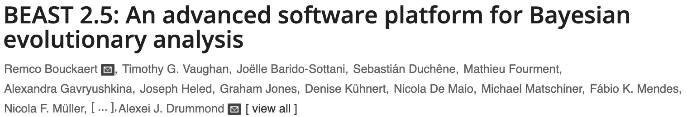
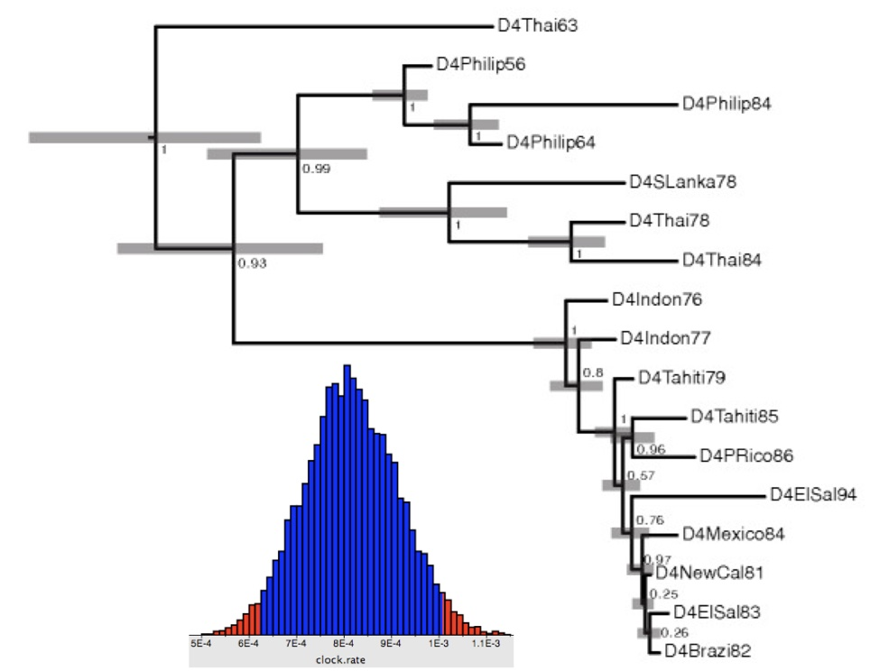
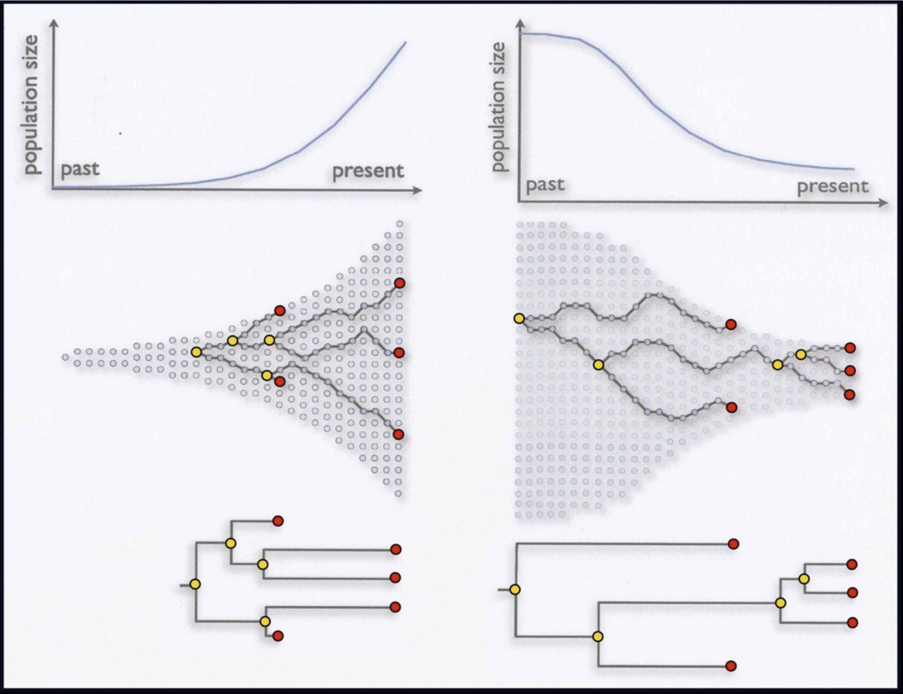
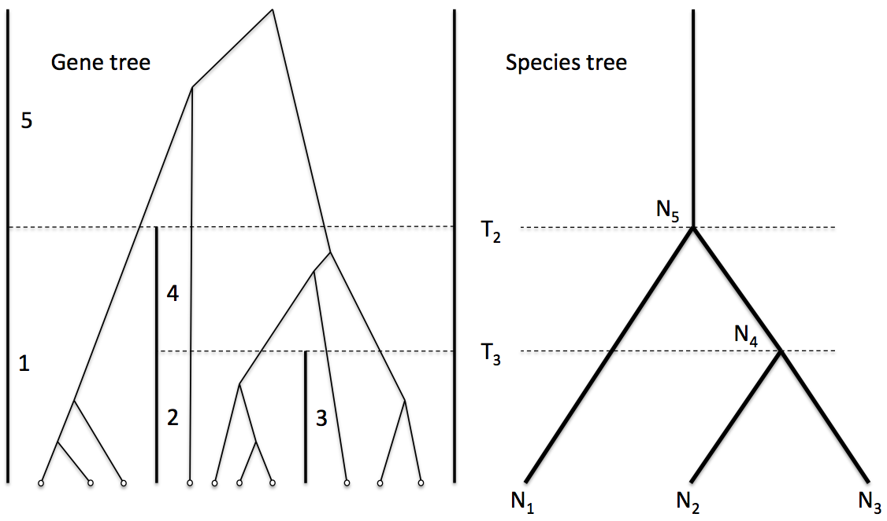

Darwin's Computer


Detail from the only illustration in the Origin of Species (Darwin, 1859)
Detail from the only illustration in the Origin of Species (Darwin, 1859)
15 possible trees of 4 individuals/species
105 possible trees of 5 individuals/species
945 possible trees of 6 individuals/species
| $n$ | # rooted trees | |
| 4 | 15 | enumerable by hand |
| 5 | 105 | enumerable by hand on a rainy day |
| 6 | 945 | enumerable by computer |
| 7 | 10395 | still searchable very quickly on computer |
| 8 | 135135 | about the number of hairs on your head |
| 9 | 2027025 | greater than the population of Auckland |
| 10 | 34459425 | $\approx$ upper limit for exhaustive search |
| 20 | $8.2 \times 10^{21}$ | $\approx$ upper limit of branch-and-bound searching |
| 48 | $2.99 \times 10^{72}$ | $\approx 10^{22}$ times the number of atoms in the Earth |
| 136 | $5.69 \times 10^{269}$ | number of trees to choose from in the “Out of Africa” data (Vigilant et al. 1991) |
Yang & Rannala (1997), Mau, Newton & Larget (1998)
What we really want is the probability of the tree given the data.
We can compute that from the likelihood using Bayes Theorem:

This is known as the Posterior probability of the tree. Using the Markov chain Monte Carlo algorithm we can produce a sample of trees that have high posterior probability.
Today is the overview. Every term here, prior, likelihood, posterior and MCMC, is unpacked from first principles in the next lecture.
This posterior probability distribution was computed using Markov chain Monte Carlo implemented in the BEAST software package (Drummond et al, 2012).
Basic model: (posterior proportional to likelihood × prior)
$$P(\color{red}{g}|D) \propto \Pr(D|\color{red}{g}) \; P(\color{red}{g})$$Substitution model:
$$P(\color{red}{g},\color{#b8860b}{Q}|D) \propto \Pr(D|\color{red}{g},\color{#b8860b}{Q}) \; P(\color{red}{g}) \; \color{#b8860b}{P(Q)}$$Substitution model and tree branching process prior:
$$P(\color{red}{g},\color{#b8860b}{Q},\color{blue}{\Theta}|D) \propto \Pr(D|\color{red}{g},\color{#b8860b}{Q}) \; P(\color{red}{g}|\color{blue}{\Theta}) \; \color{#b8860b}{P(Q)} \; \color{blue}{P(\Theta)}$$$\color{red}{g}$ the tree · $\color{#b8860b}{Q}$ substitution model · $\color{blue}{\Theta}$ tree prior parameters · $D$ the sequence data
Modelling phylogenetic data sampled through time
Drummond and Rodrigo (2000), Drummond et al (2002)
Sampling through time adds a clock rate $\color{darkgreen}{\mu}$, which converts the time tree $\color{red}{g}$ into the genetic distances the data actually record.
Origin of the HIV epidemic in the Americas, Gilbert et al (2007)
A phylogenetic reconstruction of samples of HIV-1 virus. Each tip represents a single infected individual from whom a blood sample has been taken.

Estimation of

Also: Drummond & Rambaut, 2007; Drummond et al., 2012; Bouckaert et al., 2014; Suchard et al., 2018; Baele et al., Nat Methods, 2025
>42,000 scientific studies have cited the six BEAST papers,
>3,200 last year alone (2025)
Statistical phylogenetics and
population genetics models
Mathematical epidemiology,
non-linear dynamical models
Goal: the integration of immunological, genomic and epidemiological data in a single coherent predictive model.

$\Theta$ $g$The same posterior as the previous slide. What is new is the identity of one factor: the coalescent supplies the tree prior $P(\color{red}{g}|\color{blue}{\Theta})$, and $\color{blue}{\Theta}$ becomes population size through time. (L10)

Now the tree prior on each gene tree $\color{red}{g_i}$ is itself supplied by a species tree $\color{purple}{S}$. (L11) The substitution model $\color{#b8860b}{Q}$ and clock rate $\color{darkgreen}{\mu}$ are suppressed here for simplicity; they remain part of the full model.
An example of node dating with BEAST from Subramanian et al (Biology Letters, 2013)
Every equation today was a variation on one theme: a posterior over a tree, built from a likelihood and a tree prior. The rest of the module fills in that pattern.